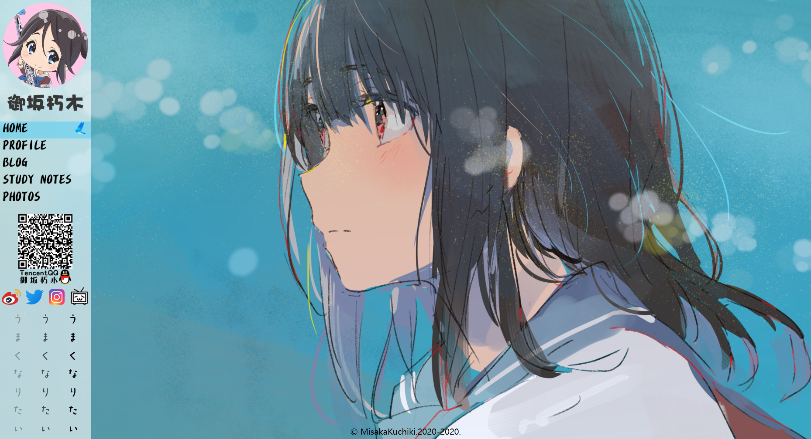
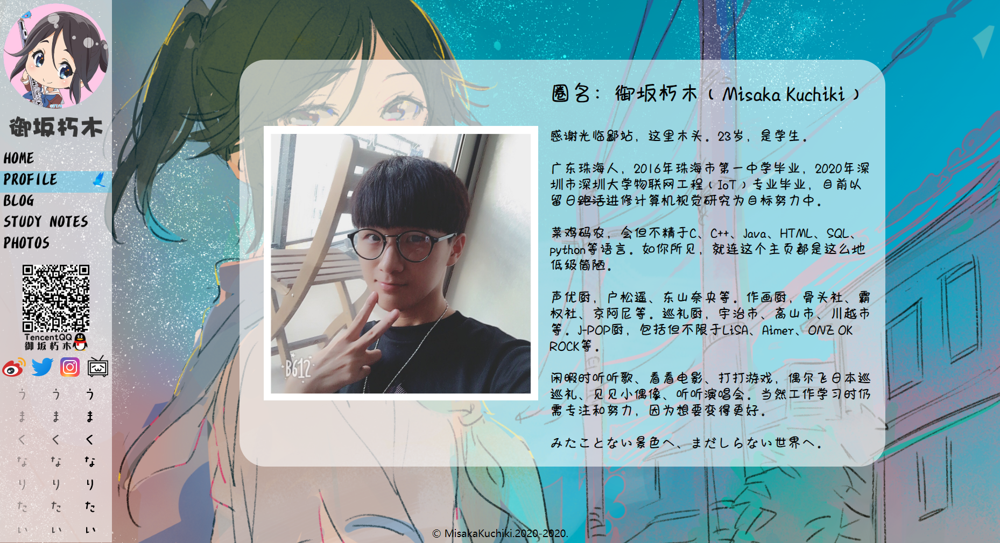
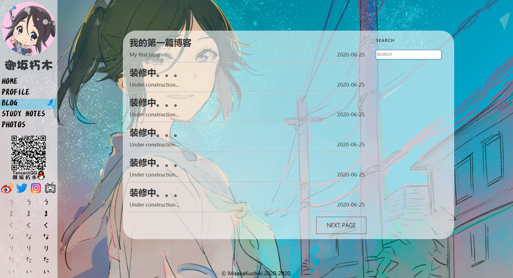
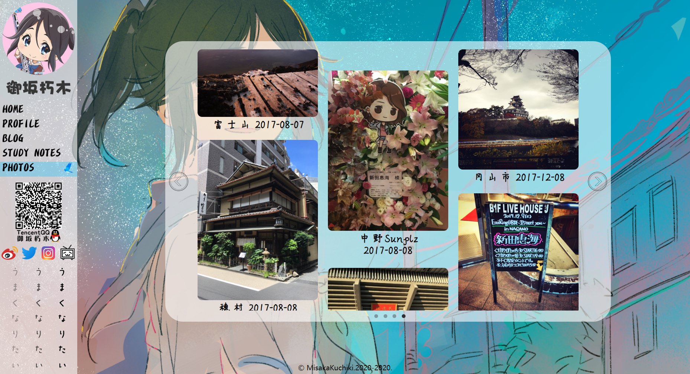

契机应该是看到之前微博上互fo的几十万粉大佬，突然莫名奇妙的就炸了号，用了几年的号就这么被毁于一旦。号炸事小，但这几年间号里记录分享的故事照片等回忆才是最重要的，自己也上传了不少各式各样鲜活的经历，要是像这样说没就没了还是蛮心疼的。
于是就想干脆做一个自己的HomePage好了，想发什么就发什么不用看大眼仔脸色，一边记录的同时还能学习下前端的开发知识。正好也顺利答辩完了，在等待返校领取毕业证的这段时间里有的是时间，那就开干吧！
第一篇博客，其实也没什么特别想说的，本质上还是为了给网页做个样式模板方便以后的更新，于是简单介绍下自己主页的模块和实现的现有功能就好了。

主页部分。左边导航栏，有头像ID，模块以及一些sns账号的导航跳转。左下的「うまくなりたい」是一句出自个人非常喜欢的番剧《吹响吧！悠风号》的名台词，点击就能弹窗油管观看。一开始是想使用B站的视频分享链接来展示的，但因为不知道B站的跨域通信指令没办法通过jQ来控制播放暂停所以在关闭弹窗后视频还是会继续播放不得已选择了油管的外链。后面应该会继续研究照顾下国内党。
主页右侧的展示部分，暂时还没有好的设计摆放思路，所以就先这样吧（看看背景美图不也挺好的么.jpg）。

个人的一些简介信息。这是我能拿出手的最好的照片了（具体还请以实物为准），鼠标放上去是可以切换的。

博客和学习笔记部分样式是一样的，因为展示博客和笔记的网页模板还没制作好所以也没法跳转没啥内容。右侧的搜索栏也还在制作中，目标功能是排列展示出所有带关键字的文章。

照片部分，以年份为单位展示一些个人旅游巡礼或者其他一些比较具有意义的照片。后续会更新点击图片跳转到其他页面展示该组的所有图片。
可见的部分暂时就这么多，本菜鸡也是刚刚开始前端的学习，不求一步登天但求一步一个脚印慢慢积累经验，页面稍显简陋还请看官见谅，后续也会继续加油更新的。
By：御坂朽木 2020-07-03